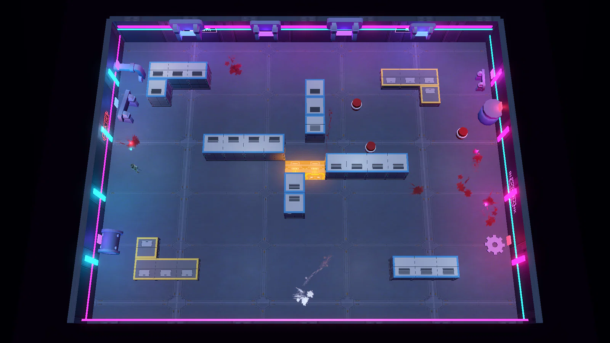
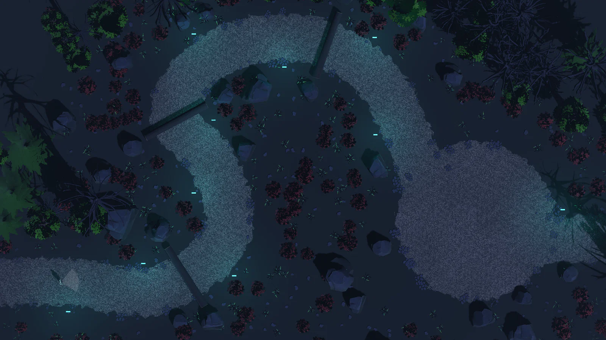

Edgerunners 기획서
전체 구조를 정리한 개요 기획서 하나와 주제별 세부 기획서 4개로 나눴다.슬라이드마다 아래에 항목별 설명을 붙였다. 개발 과정은 작업 내역에 따로 정리했다.
어떤 게임이고 핵심 재미가 무엇인지, 전체 구조를 한눈에 정리했다.
기본 능력치, 공격 예고 규칙, 피해 기준, 대시로 피할 수 없는 위협.
무기, 사이버웨어 8부위와 레벨, 프로토타입, 해킹, 성장과 경제.

맵 제작 과정, 맵 목록, 첫 판의 등장 순서, 보스.

첫 판에만 진행하는 숲속 맵 세 개와, 시간을 멈추고 가르치는 코칭 컷.